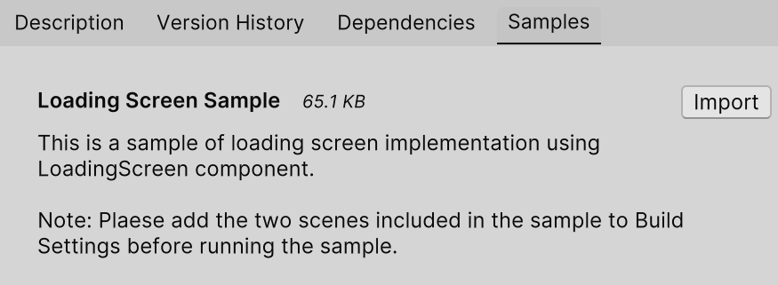
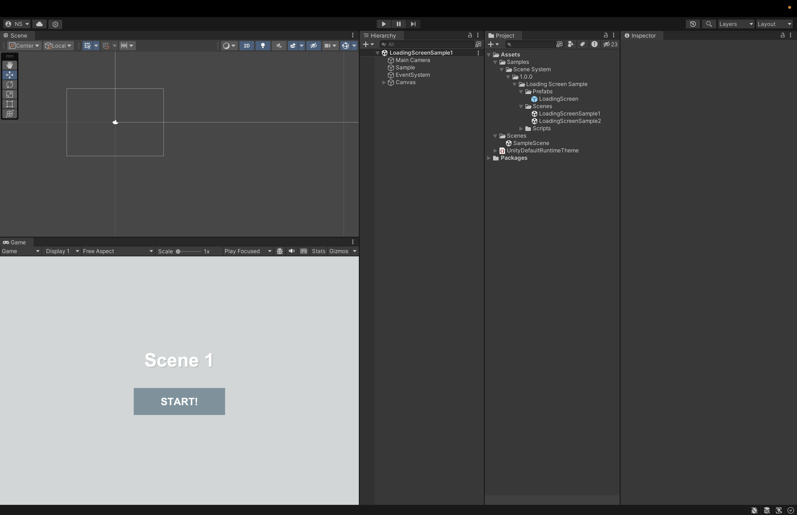

Sample A loading screen implementation sample using SceneLoader is available and can be installed from Package Manager/Samples. Please refer to it when you actually create a loading screen.  You can download the sample by clicking Import. 